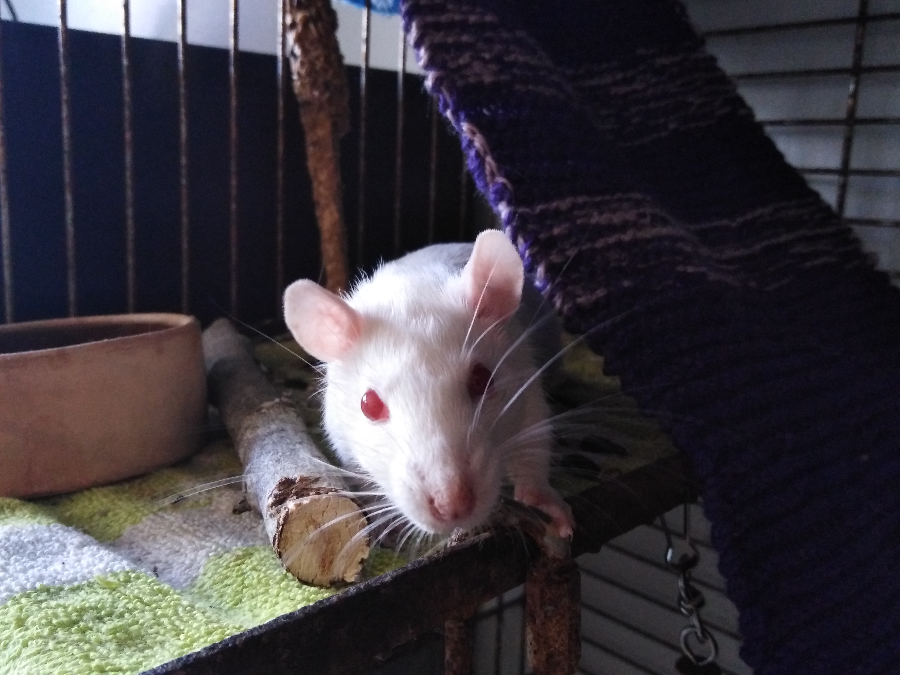

Tietoa minusta
Olen Jasper Alakoskela.
Olen syntynyt 13.7.2003.
Tällähetkellä opiskelen datanomi alaa Etelä-Savon ammattiopistossa.
Jasper Alakoskela
Olen Jasper Alakoskela.
Olen syntynyt 13.7.2003.
Tällähetkellä opiskelen datanomi alaa Etelä-Savon ammattiopistossa.
Perjantaina kävin tyttöystäväni kanssa hakemassa Mikkelin Faunatarista kaksi rotan poikasta jotka nimesimme Vinskiksi ja Rontiksi. Molemmat ovat rotua punasilmäinen golden ja he ovat syntyneet 9.3.2020 ja oikeat nimet ovat Revontuli ja Joiku.
